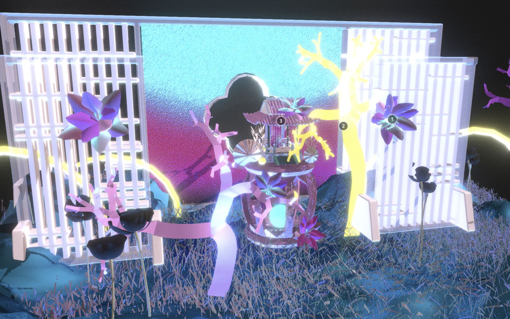
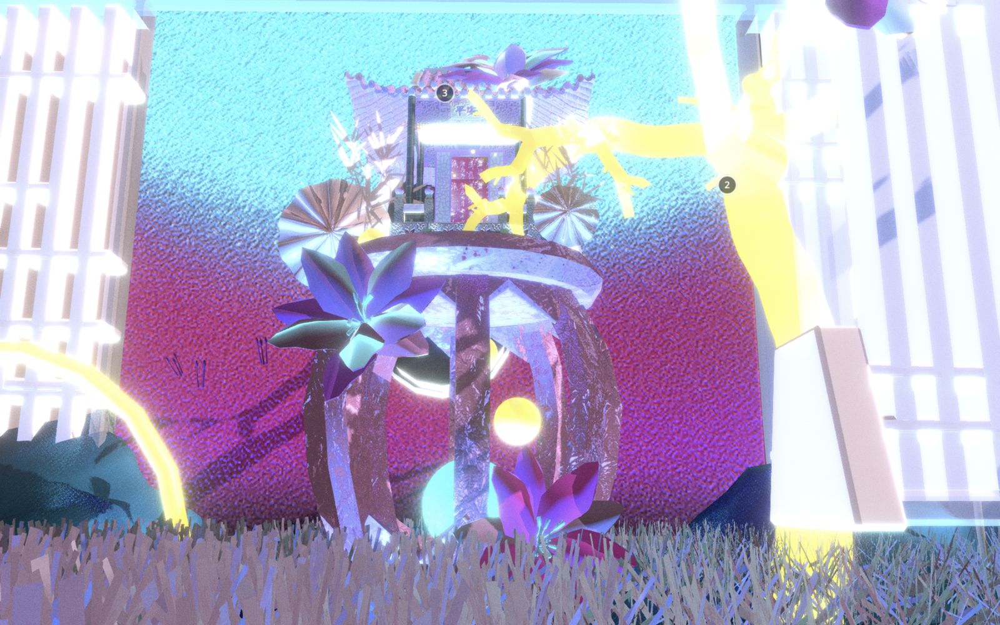
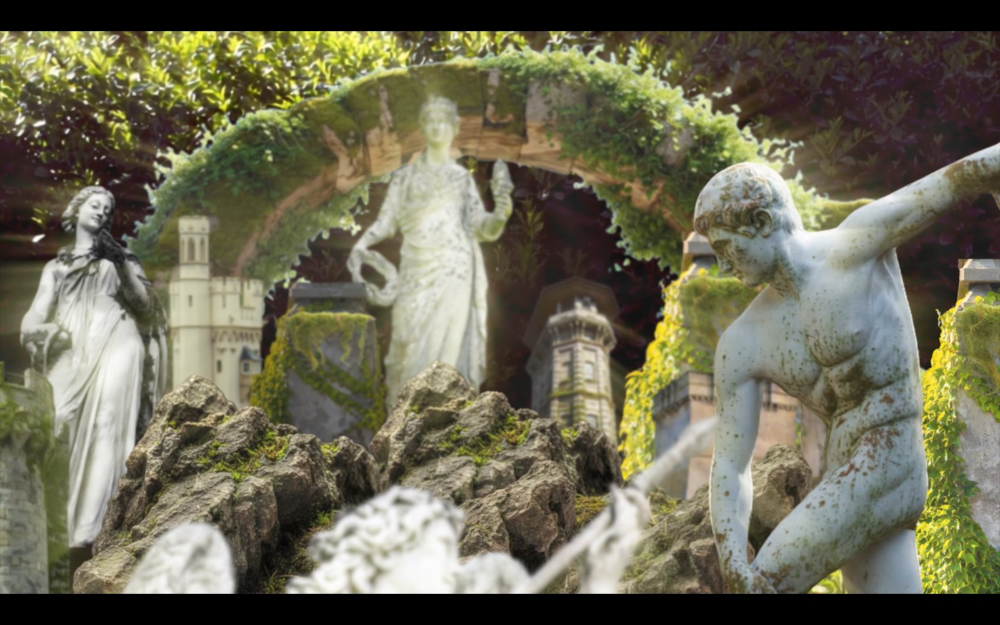
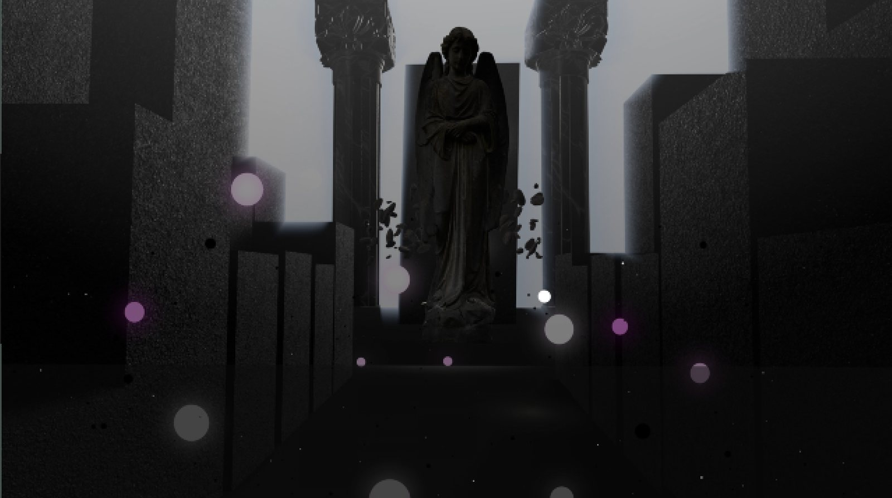
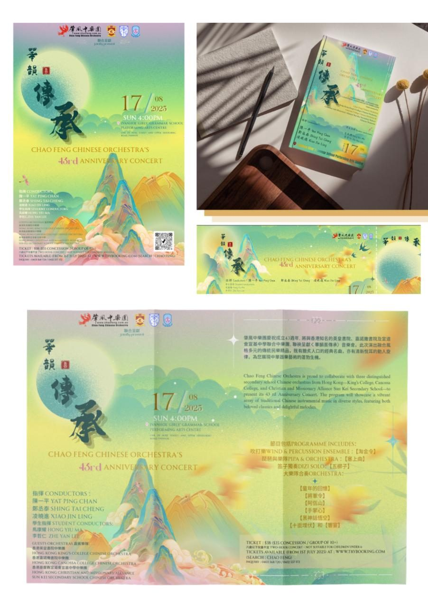

Click to open
Click to open
Melbourne, VIC · Kuala Lumpur, MY
Sharon Yii — Lighting Designer & Scenographer
01 / LightingLight gives space
Light gives space
its emotion.
I work with colour, contrast and timing to shape atmosphere and guide attention.
Lighting programming · QuickShow · Cueing
02 / ScenographyA world built
A world built
around light.
Through models, material and scale, I explore how a space might be encountered.
Maya · 3D modelling · Spatial exploration
03 / InteractionYour presence
Your presence
changes the scene.
Real-time visuals and responsive light connect the environment to the people within it.
TouchDesigner · Arduino · Sensors · LED sync
I create spaces to be encountered and experiences that continue to resonate after they disappear.
Lighting
Scenography
Space
Selected work
Light, space & presence
Click to openClick to open


Click to open Click to open
Click to open

Click to open
Click to openTools of the trade
TouchDesigner
Real-time visuals. Audio-reactive and generative systems, built as living networks for projection and live performance.
Maya
3D modelling. Building stage volumes, props and spaces, so a set can be drawn and tested before it exists.
QuickShow
Light programming. Cueing colour, movement and timing so light moves with the piece.
After Effects
Motion graphics. 2 and 2.5D animation, layered depth and looping screen content.